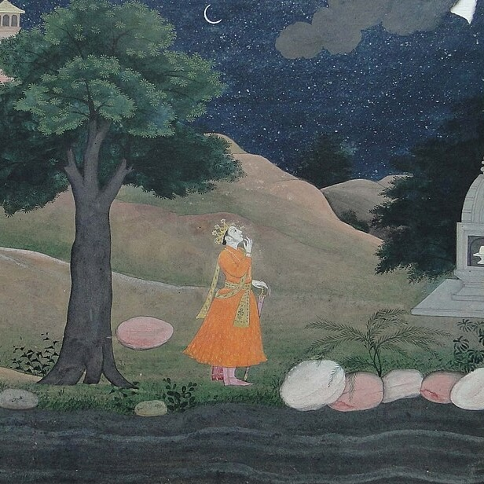

On WhatsApp, I'm in a "sanskrit-coders" group, which is part of a larger "संस्कृत संवादः" / "संवादपरिवारः" community. The other day, in the related "Announcements" group, there was a huge drop of links, spread out over several posts. With permission of the OP — dedicated admin Mohit Dokania — here it is in full.
If you want to join this or other related groups, visit linktr.ee/samvadah.
Overview of Posts
- Simple List of Sanskrit Websites
- Annotated List of Sanskrit Websites
- Linktree
- Guide for First-time login to Google AI Studio
- Sanskrit News Sources
- Magazine Sources
- Please save this now...
✎ Simple List of Sanskrit Websites
(Updated on 23rd July 2026) [See annotated list: whatsapp.com/channel/0029Va4kEk2GE56bqCSi4n3N/4162]
☛ Sanskrit Websites
1. Sanskrit Dictionaries
- ⌲ Sanskritkosha : sanskritkosha.com/ ☞ t.me/sanskritkoshbot ☜
- ⌲ KST : kosha.sanskrit.today/ ☞ t.me/Koshaappbot ☜
- ⌲ Ambuda Dictionaries : ambuda.org/tools/dictionaries
- ⌲ Sanskrit Lexicon : sanskrit-lexicon.uni-koeln.de/simple
2. Sanskrit News
- ⌲ Newz Viewz : newzviewz.com/sanskrit
- ⌲ Sanskrit Samachar : sanskritsamachar.com/
- ⌲ Samprati Vartah : samprativartah.in/
- ⌲ Navavani : navavani.org.in/wp/archives/category/news-updates
- ⌲ HimSanskrit : himsanskritam.com/
3. Sanskrit Games
- ⌲ संस्कृतक्रीडाः : http://games.sanskrit.dev/
- ⌲ Padavali : krida.thesanskritchannel.org/padavali
- ⌲ Sanskrit Wordle : sanskrit-wordle.streamlit.app/
- ⌲ Satyaasatyam : satyaasatyam.streamlit.app/
- ⌲ IndiYatra quizzes : indiyatra.in/#Quizzes
- ⌲ Wordwall : wordwall.net/en-in/community/sanskrit
- ⌲ Sandhi Invaders : sanskritdictionary.com/sandhi/game/
- ⌲ Vyoma Labs : digitalsanskrit.com/genre/games-activities/
- ⌲ Sanskrit kalp : sanskritkalp.com/kalp/game-samskritam/
- ⌲ CoursesUSeek : coursesuseek.com/sanskrit-games/
4. Sanskrit Texts
- ⌲ Sanskrit Documents : sanskritdocuments.org/
- ⌲ Sanskrit World : sanskritam.world/
- ⌲ Sanskrit Wikipedia : sa.wikipedia.org/
- ⌲ Ambuda : ambuda.org/texts/
- ⌲ Wikisource : sa.m.wikisource.org/
- ⌲ Gita Supersite : gitasupersite.in/
- ⌲ Upanishads : upanishads.org.in/
- ⌲ Sanskrit Today : sanskrit.today/ ☞ t.me/vaahini_sanskrit_bot ☜
- ⌲ Shloka Sanskrit Today : shloka.sanskrit.today/
- ⌲ Advaita Sharada : advaitasharada.sringeri.net/ग्रन्थाः
- ⌲ Wisdom Library : www.wisdomlib.org/sanskrit
- ⌲ Sanskrit eBooks : sanskritebooks.org/
- ⌲ Vedabase : vedabase.io/
- ⌲ वेद.com : वेद.com/
- ⌲ Vedic Heritage : vedicheritage.gov.in/
- ⌲ World Sanskrit : worldsanskrit.net/
- ⌲ Mahabharata : mahabharata.shreevatsa.net/
- ⌲ Ananda Makaranda : anandamakaranda.in/
- ⌲ eBharati Sampat : ebharatisampat.in/
- ⌲ Story Weaver : storyweaver.org.in/en/stories/?language=Sanskrit&language=English-Sanskrit
5. Sanskrit Tools
- ⌲ Ashtadhyayi : ashtadhyayi.com/ ☞ t.me/vyakarana_bot ☜
- ⌲ Jñānasaṅgrahaḥ : sanskrit.iitk.ac.in/jnanasangraha/
- ⌲ Sankhya : sankhya.streamlit.app/ ☞ t.me/sankhyaabot ☜
- ⌲ संसाधनी : sanskrit.uohyd.ac.in/scl/#
- ⌲ Vidyut Demo : ambuda-org.github.io/
- ⌲ Sanskrit Abhyas : sanskritabhyas.in/
- ⌲ Shaabdabodha : www.shaabdabodha.app/ ☞ t.me/SanskritAIbot ☜
- ⌲ Aksharamukha : aksharamukha.appspot.com/ ☞ t.me/aksharamukhabot ☜
- ⌲ SanskritCR : ocr.sanskritdictionary.com/ ☞ t.me/imageToText_bot ☜
- ⌲ Sambhasha : sambhasha.ksu.ac.in/projects/
- ⌲ DharmaMitra : dharmamitra.org/ ☞ t.me/dharmamitrabot ☜
- ⌲ Hindi Garv : hindigarv.github.io/
- ⌲ Wisdom Library : www.wisdomlib.org/tools/sanskrit-analysis
- ⌲ Sandhi Calculator : sanskritdictionary.com/sandhi/
- ⌲ Sanskrit News Generator : sanskritnews.streamlit.app/
- ⌲ Skrutable : skrutable.info/
- ⌲ Shlokartha : amritbhasha.blogspot.com/2025/09/shlokartha-bodhini.html
- ⌲ Vāgdhenu : prathosh.in/vagdhenu/
- ➺ Sanskrit Learning : t.me/samvadah/18498
- ➺ Sanskrit Magazines List : sanskritdocuments.org/sites/samvadah/SanskritMagazines.php
- ➺ Best-Ever Sandhi App : rb.gy/soaxt5
Annotated List of Sanskrit Websites
(Updated on 23rd July 2026)
[See simple list: https://whatsapp.com/channel/0029Va4kEk2GE56bqCSi4n3N/4161]
• Read in google groups: https://groups.google.com/g/Samvadah/c/2I-PSh8Qz50
• Read as a note: https://anotepad.com/note/read/qx4598pk.
1. Sanskrit Dictionaries
✫ Sanskritkosha: https://t.me/sanskritkoshbot
֍ https://sanskritkosha.com
An online platform provides access to over 50 Sanskrit dictionaries for quick vocabulary lookup, perfect for studying texts, grammar, and scriptures.
✫ KST: https://t.me/Koshaappbot
֍ https://kosha.sanskrit.today
A comprehensive aggregator of over 60 dictionaries for simultaneous searches, aiding vocabulary and grammar study with tools like trending words, vibhakti guides, Bhagavad Gita summaries, Telegram bots, AI insights, filtered glossaries, screenshot sharing, and fast local searches—ideal for word exploration, scripture research, and vocabulary building.
✫ Ambuda Dictionaries:
֍ https://ambuda.org/tools/dictionaries
A fast lookup tool supporting multiple input schemes like Devanagari, IAST, Harvard‑Kyoto, SLP1, Kannada, and Telugu for Sanskrit words, enabling quick nominal forms and root analysis during text study.
✫ Sanskrit Lexicon:
֍ https://sanskrit-lexicon.uni-koeln.de/simple
A simple search interface for digitized Sanskrit lexicons with PDF scans and XML downloads.
2. Sanskrit News
✫ Newz Viewz:
֍ https://newzviewz.com/sanskrit
A news platform with Sanskrit content and audio, suited for reading and listening to current events.
✫ Sanskrit Samachar:
֍ https://sanskritsamachar.com
A Sanskrit news website for accessing contemporary news updates.
✫ Samprati Vartah:
֍ https://samprativartah.in
An online Sanskrit news publisher with YouTube channels, social sharing, and latest news links.
✫ Navavani:
֍ https://navavani.org.in/wp/archives/category/news-updates
Sanskrit news updates by an institution based in Kerala.
✫ HimSanskrit:
֍ https://himsanskritam.com
Sanskrit news, religious stories, and culture with YouTube, website subscriptions, daily newspapers and social follows.
3. Sanskrit Games
✫ Sanskrit Games: ֍ games.sanskrit.dev/ A collection of eight interactive Sanskrit language games featuring daily new puzzles like word jumble, scrabble-style, connections, and more in a brilliant UX.
✫ Padavali:
֍ https://krida.thesanskritchannel.org/padavali
Hunt for hidden Sanskrit words in a 6x6 grid, featuring weekly themes, multiple scripts and AI word meanings.
✫ Sanskrit Wordle:
֍ https://sanskrit-wordle.streamlit.app
Test your skills by guessing Sanskrit words from Amarakosha in a puzzle challenge—perfect for building vocabulary with fun!
✫ Satyaasatyam:
֍ https://satyaasatyam.streamlit.app
This is a game for four players to test truth and untruth. Your goal is to correctly guess the prescribed Varnas of all the players.
✫ IndiYatra quizzes:
֍ https://indiyatra.in/Quizzes
Sanskrit Quizzes on India's heritage, history, and festivals with many options to choose from.
✫ Wordwall Sanskrit:
֍ https://wordwall.net/en-in/community/sanskrit
A community platform for interactive Sanskrit games like matching, quizzes, word searches, and flashcards.
✫ Sanskrit Invaders:
֍ https://sanskritdictionary.com/sandhi/game
An interactive sandhi rule game for practicing euphonic combinations.
✫ Vyoma Labs:
֍ https://digitalsanskrit.com/genre/games-activities
A few digital Sanskrit activities for children, may require a subscription.
✫ Sanskrit Kalp:
֍ https://sanskritkalp.com/kalp/game-samskritam
Vocabulary and grammar games with interactive challenges for kids, building proficiency via gamified learning.
✫ CourseSeek:
֍ https://coursesuseek.com/sanskrit-games
A curated list of games like word‑catch game and action memory game, supporting interactive language learning.
4. Sanskrit Texts
✫ Sanskrit Documents:
֍ https://sanskritdocuments.org
One of the biggest repositories of Sanskrit texts with scholar site links, information about bookstores, Veda Pathashala, scanned books, news broadcasts, newspapers, songs, videos, discussion groups—perfect for text exploration, media access, and scholarly resources.
✫ Sanskrit World:
֍ https://sanskritam.world
A platform for Sanskrit‑related resources and learning materials, aiding access to texts and study aids.
✫ Sanskrit Wikipedia:
֍ https://sa.wikipedia.org
A free encyclopedia in Sanskrit covering literature, history, current events, biographies, news, and proverbs, ideal for exploring classical and modern topics.
✫ Ambuda Texts:
֍ https://ambuda.org/texts
A huge digital library of Sanskrit heritage texts providing great UX. Please also check the proofing section for more works.
✫ Wikisource:
֍ https://sa.wikisource.org
A big host for Sanskrit religious and literary texts with full verse‑by‑verse access, suited for analyzing devotional hymns.
✫ Gita Supersite:
֍ https://gitasupersite.in
Access to Bhagavad Gita, Ramayana, Upanishads, and more with links to multiple Gitas, Valmiki Ramayanam, Brahma Sutra, Yoga Sutra, Sankara Site, Nepali Site, and concept maps—great for epic study and philosophical mapping.
✫ Upanishads:
֍ https://upanishads.org.in
A focus on Upanishads as the pinnacle of Indian spiritual thought, emphasizing philosophical insights and Sri Aurobindo's interpretations.
✫ Sanskrit Today: https://t.me/vaahini_sanskrit_bot
֍ https://sanskrit.today
A hub for learning and spreading Sanskrit through beginner courses, daily words, and community tools like Kosha.app, YouTube channels, forums, Telegram group, and contributions in clean UI—ideal for new learners and material research.
✫ Shloka Sanskrit Today:
֍ https://shloka.sanskrit.today
Biggest repository of Sanskrit verses with meanings and detailed AI analysis, grouped together with auto‑generated tags.
✫ Advaita Sharada:
֍ https://advaitasharada.sringeri.net/ग्रन्थाः
A collection of Advaita Vedanta texts like Vivekachudamani, Panchapadika, and Nyayasudha with grantha links, suited for philosophical text analysis.
✫ Wisdom Library:
֍ https://wisdomlib.org
Books, articles, and hymns on Buddhism, Hinduism and philosophy with grammar analysers, translations, and authentic information for broad study.
✫ Sanskrit eBooks:
֍ https://sanskritebooks.org
Biggest Sanskrit guide to download Sanskrit book PDFs that are available online.
✫ Vedabase:
֍ https://vedabase.io
A good collection of Sanskrit texts with Prabhupada's teachings on Sanskrit texts, with good features for easy reading.
✫ वेद:
֍ https://वेद.com
A dedicated Vedic portal for digitized Vedas and related literature with commentaries in multiple languages, and a powerful search engine and a simple UI.
✫ Vedic Heritage:
֍ https://vedicheritage.gov.in
An Indian government portal preserving Vedic knowledge, offering access to Vedanga as well as oral traditions, textual publications and such.
✫ World Sanskrit:
֍ https://worldsanskrit.net
Modular lessons on Panini's grammar with dhAtuvijjaanam, PDFs, MP3s, handouts, live classes and references in Wikipedia format.
✫ Mahabharata:
֍ https://mahabharata.shreevatsa.net
Sanskrit Mahabharata text for Books 1‑7 with parallel English translations (Roy–Ganguli, Dutt), perfect for comparative epic reading.
✫ Ananda Makaranda:
֍ https://anandamakaranda.in
A digital archive of dvaita vedanta literature.
✫ eBharati Sampat:
֍ https://ebharatisampat.in
A searchable digital Sanskrit corpus with thousands of e‑granthas and Unicode books, ideal for e‑book study.
✫ Story Weaver:
֍ https://storyweaver.org.in/en/stories/?language=Sanskrit&language=English-Sanskrit
Children's stories in Sanskrit and bilingual formats for multi‑language access, great for young learner engagement.
5. Sanskrit Tools
✫ Ashtadhyayi: https://t.me/vyakarana_bot
֍ https://ashtadhyayi.com
A central hub for Paninian grammar and Sanskrit enthusiasts, suited for advanced study and lots of useful tools. This is the most famous website among all others.
✫ Jñānasaṅgrahaḥ:
֍ https://sanskrit.iitk.ac.in/jnanasangraha
Applications demonstrating Indian scientific traditions with Saṅkhyāpaddhatiḥ for numeral systems (Kaṭapayādi), Chandojñānam for meter identification and Varṇajñānam for Sanskrit alphabet utilities—ideal for numeral and poetic meter study.
✫ Sankhya: https://t.me/sankhyaabot
֍ https://sankhya.streamlit.app
A tool for converting numerals to Sanskrit figures with good features and simple UI.
✫ संसाधनी:
֍ https://sanskrit.uohyd.ac.in/scl
Numerous Sanskrit processing tools like morphological analysis and verb form generator for multidimensional analysis in Sanskrit.
✫ Vidyut Demo:
֍ https://ambuda-org.github.io
A demo for vidyut‑prakriya word generation, providing comprehensive verb forms based on Paninian Sutras.
✫ Sanskrit Abhyas:
֍ https://sanskritabhyas.in
Grammar exercises for nouns, verbs, pronouns, kṛt/taddhita derivatives, and numerals along with tables.
✫ Shaabdabodha: https://t.me/SanskritAIbot
֍ https://shaabdabodha.app
An advanced Pāṇinian Sanskrit Grammar AI tool offering complete śloka analysis as well as meter identification and other useful tools, supported by a good text collection.
✫ Aksharamukha: https://t.me/aksharamukhabot
֍ https://aksharamukha.appspot.com
A transliteration tool for Indic scripts, enabling text conversion for multi‑script study.
✫ SanskritCR: https://t.me/imageToText_bot
֍ https://ocr.sanskritdictionary.com
Converts Sanskrit images into text one by one.
✫ Sambhasha:
֍ https://sambhasha.ksu.ac.in/projects
Computational tools for Sanskrit processing and text analysis in linguistics.
✫ DharmaMitra:
֍ https://dharmamitra.org
A fantastic toolkit for Sanskrit with grammatical analysis, translation, book references and OCR.
✫ Hindi Garv:
֍ https://hindigarv.github.io
A platform for finding Sanskrit equivalents of Urdu words.
✫ Wisdom Library:
֍ https://wisdomlib.org/tools/sanskrit-analysis
An experimental grammar analyzer with text segmentation, glossary extraction, and tables for nouns/adjectives/pronouns—great for syntax breakdown and term analysis.
✫ Sandhi Calculator:
֍ https://sanskritdictionary.com/sandhi
A sandhi rule applicator based on "The Little Red Book," for understanding euphonic combinations in texts.
✫ Sanskrit News Generator:
֍ https://sanskritnews.streamlit.app
A generator for Sanskrit news articles, aiding content creation and easing complex tasks.
✫ Skrutable:
֍ https://skrutable.info
A custom modified tool utilising Dharmamitra API to assist Sanskrit text analysis and conversions.
✫ Shlokartha Bodhini:
֍ https://amritbhasha.blogspot.com/2025/09/shlokartha-bodhini.html
An online AI tool for detailed shloka analysis providing word‑by‑word meaning, grammatical breakdown, and explanations—highly useful for students and enthusiasts.
✫ Vagdhenu:
֍ https://prathosh.in/vagdhenu
A vṛtta (meter)‑aware śloka‑to‑chant Text‑to‑Speech (TTS) system that automatically detects meter and generates authentic chant‑style recitation—ideal for practicing non‑Vedic chanting.
➺ Sanskrit Magazines List : https://sanskritdocuments.org/sites/samvadah/SanskritMagazines.php
➺ Best‑Ever Sandhi App : https://rb.gy/soaxt5
🌳 Linktree : linktr.ee/samvadah
- ⭐️ संस्कृत संवादः : chat.whatsapp.com/HLeG1yYRUbk4Il2GuTLjKa
- ⭐️ WhatsApp Channel : whatsapp.com/channel/0029Va4kEk2GE56bqCSi4n3N
- ⭐️ संस्कृतसंवादस्मृतिः — Rewind Channel : whatsapp.com/channel/0029VbD2Agh72WTnAgpKjj2Q
- ⭐️ प्रश्नोत्तरम् – Q&A : chat.whatsapp.com/KLNJpF78ojkFQ5EnbNGd4e
- ⭐️ रामदूतः – News, Magazine and radio : chat.whatsapp.com/BcxUamzweEc51C8TVBbl0k
- ⭐️ वाग्गोष्ठी – Sanskrit Chats Only : chat.whatsapp.com/KbIIkRRh21IDSlhGII9Tgp
- ⭐️ Sanskrit-Coders : chat.whatsapp.com/INvglXFIfBzEV6kHteK3gs
- ⭐️ Telegram Channel : t.me/samskrt_samvadah
- ⭐️ संस्कृतसंवादस्य गणः — चर्चायै गणः : t.me/samskrta_group
- ⭐️ संस्कृतसंवादः संहतः — Supergroup : t.me/ask_sanskrit
- ⭐️ रामदूतः — News, Magazine and radio : t.me/ramdootah
- ⭐️ ग्रन्थकुटी : t.me/granthakutee Sanskrit Books
- ⭐️ Facebook : fb.com/samskritsamvadah
- ⭐️ Instagram : instagram.com/samvadah?igshid=OGQ5ZDc2ODk2ZA==
- ⭐️ Youtube : www.youtube.com/@samvadah
- ⭐️ 𝕏 : x.com/samvadah
- ⭐️ Google group : groups.google.com/g/Samvadah
- ⭐️ GitHub : github.com/samvadah
- ⭐️ Archive : archive.org/details/@user_62867/uploads
- ⭐️ Website : sanskritdocuments.org/sites/samvadah
📧 E-mails : • samvadah@proton.me • samskrit.samvadah@gmail.com
» Help Translate Telegram« : t.me/samvadah/10104
🦮 Guide for First-time login to Google AI Studio
1. Visit aistudio.google.com
2. Click Sign in → use your Google account
3. Accept the Terms of Service
4. Done. You'll land on the prompt/chat interface
→ Notes:
1. Free tier available (with rate limits).
2. Works on mobile browsers, but desktop is more comfortable for longer chats
3. Google AI Studio, powered by its latest Pro model, is currently the best AI available for Sanskrit.
Then, Use the links below for exclusive Sanskrit-focused prompts, specially designed for Sanskrit users:
1. Sanskrit Guru (ask questions) : t.ly/bh8e_
2. Sanskrit Translation : t.ly/c0rX1
3. Sanskrit Sambhashana Chatbot (VāgVilāsini) : t.ly/Spmu0
Best way to ask questions:
Simply use the /ai command in this chat:
👉 t.me/Ask_Sanskrit/4042
Example:
/ai What does क्षम्यताम् mean?
Group members can review and verify the AI's response. This collaborative approach is even better than private queries, as the community can collectively check accuracy and suggest corrections if needed.
🌺 संस्कृतवार्त्तास्रोतांसि (Sanskrit News Sources)
🎙 आकाशवाणी • newsonair.gov.in/?s=Sanskrit • newsonair.gov.in/nsd-audio/
🎚 संस्कृत साप्ताहिकी • newsonair.gov.in/?s=Saptahiki • newsonair.gov.in/weekly-broadcast/
📡 वार्त्ता वार्त्तावली च • youtube.com/@ddnews/videos
📺 जन्मटीवी • youtube.com/@tvjanam/videos
❄️ हिमसंस्कृतवार्ता • youtube.com/@himsanskritnews/videos
📰 सुधर्मा • epapersudharmasanskritdaily.in/
💼 Job Opportunities chat.whatsapp.com/JrhrDF8L65m1MSAOBGdiid
📱न्यूजव्यूज • www.newzviewz.com/sanskrit/
📠 सम्प्रतिवार्त्ताः • samprativartah.in/
📻 दिव्यवाणी • radio.garden/listen/divyavani/lX2VE9qX 📻 संस्कृतभारती • radio.garden/listen/radio-sanskrit/R0xtFLW0
🎧 वत्सला (पौडकाष्ट्) : • t1z.co/spotify-san 🎧 सम्भाषणसन्देशः (पौडकाष्ट्): • sambhashanasandesha.in/podcast
📆 पञ्चाङ्गम् • bit.ly/adyatithi-5128-parabhava
🗂 Recent Magazine Collection • archive.org/details/sanskritmagazines/
🌺 संस्कृतपत्रिकास्रोतांसि (Magazine Sources)
💎 All sources of Sanskrit magazines compiled by t.me/ramdootah.
🌐 Read this on web : sanskritdocuments.org/sites/samvadah/SanskritMagazines.php ⬇️ Flipbook downloader : downloaderr.org/ (mirror : mydocdownloader.com/)
- ❥ Sanskrit Samvad : www.thearyasamaj.org/magazines
- ❥ AksharVani : chat.whatsapp.com/GrEIkxlSfGj7dKk3qMX7zI
- ❥ Vak Sanskrit : vaksanskrit.com/?page_id=5058
- ❥ Sambhashana Sandesha : www.sambhashanasandesha.in/login
- ❥ Jahnavi : www.jahnavisanskritejournal.in/
- ❥ Gandivam : gandivam.in/
- ❥ Sapthagiri : ebooks.tirumala.org/search?key=series&value=sapthagiri
- ❥ Anantaa : www.anantaajournal.com/archives/
- ❥ VedChakshu : www.jyotishajournal.com/archives
- ❥ Sanskrit Article : sanskritarticle.com/index.php/articles/
- ❥ Gīrvāṇapatrikā : chitrapurmath.net/site/activities-girvanaprathistha-patrika
- ❥ Hitaya : hitaya.org/
- ❥ Chandrika & Manjari : sanskritacademy.delhi.gov.in/hi/e-magazine
- ❥ Sanskrit Vaarta : sanskrit.nic.in/sanskrit_varta.php
- ❥ Sanskrit Vimarshah : vimarsah.sanskrit.ac.in/
- ❥ IGNOU - JJIS : journal.ignouonline.ac.in/index.php/jjis/issue/current
- ❥ BSRJ : research.baps.org/journal/index.php/BSRJ/issue/archive
- ❥ RK Mission : sanskrit.rkmvu.ac.in/research-and-publications/list-of-publications/
- ❥ MSRVVP – Veda Vidya : msrvvp.ac.in/veda_vidya.html
- ❥ SSUS Pratyabhijna : ssus.ac.in/research_publications/journals/prathyabhijna
- ❥ Kanpur Philosophers : searchkanpur.com/journal//current_issue.php
- ❥ Gurukul Patrika : gurukulpatrika.gkv.ac.in/
- ❥ Soma-Vakyartha-Shodhjyotih : jyotih.inflibnet.ac.in/
- ❥ CSU Bhopal : www.csu-bhopal.edu.in/publications.html
- ❥ CSU Jaipur : csu-jaipur.edu.in/publications.html
- ❥ CSU Guruvayoor : www.csu-guruvayoor.edu.in/journals.html
- ❥ CSU Jammu : www.csu-jammu.edu.in/publications.php
- ❥ CSU Balahar : csu-balahar.edu.in/Journals.html
- ❥ CSU Sringeri : www.csu-sringeri.edu.in/journals.html
- ❥ Samvardhini : samvardhini.in/
- ❥ Mahashvini : nsktu.ac.in/index.php/mahashvini/
- ❥ Shemushi : nsktu.ac.in/index.php/university-newsletter/
- ❥ Swarmangla : artandculture.rajasthan.gov.in/rsanskritacademy/#/home/dptHome/1166
- ❥ Eklavya – Sampratam : eklavyasanskritacademy.org/mainsamachar.html
- ❥ Sanskrit Academy : sanskritacademy.net/journals/
- ❥ Shodhsamhita : archive.org/details/shodhsamhitavol.ijuldec.2011/SHODHSAMHITA (Volume X, Issue II) July-December 2023
- ❥ Aranyakam : aranyakam.in/index.php/download
- ❥ Ajasraa : www.absplko.in/ajasraa/index.html
- ❥ Haryana Akademi – Hariprabha : haryanaakademi.ac.in/Sanskrit_Academy/magazine
- ❥ USVV - Shodh Pragya : www.usvv.ac.in/research-journal.php
- ❥ JU – Anvῑkṣā : jusanskritjournal.in/archive
- ❥ Shodha samiksha : shodhasamiksha.com/#/content
- ❥ Kiranavali : sites.google.com/view/kiranavalionline/home
- ❥ KVN – Lalitā : www.kishorvidyaniketan.com/previous-issues/
- ❥ Paniniya : www.mpsvv.ac.in/index.php/en/paniniya-research-journal
- ❥ BHU Prajna : prajnabhu.in/
- ❥ BHU Āmnāyikī : www.bhu.ac.in/Site/Page/1_3382_6699_Amnayiki-Issues
- ❥ BHU SanskritVidya : bhu.ac.in/Site/Page/1_127_6641_Faculty-of-Sanskrit-Vidya-Dharma-Vijnan-Research-Journal
- ❥ BHU Vedavijnana : bhu.ac.in/Site/Page/1_3239_4515_6886_3495_Vedic-Vigyan-Kendra-Research-Journal
- ❥ Vyasasri : www.vyasasri.com/issue.php
- ❥ GKV Vedic VagJyoti : www.gkv.ac.in/vedic-vag-jyoti/
- ❥ Prāchi Prajnā : sites.google.com/site/praachiprajnaa/home
- ❥ Sukrtindra : sukrtindraoriental.org/journal-archives-pdf/
- ❥ Manīṣā : www.sabangcollege.ac.in/Manisha-a-research-journal-of-sanskrit.aspx#
- ❥ Devabhumisaurabham : dbs.csu-devprayag.edu.in/volume.php
- ❥ Veda-Savitā : www.veda-sansthan.org/p/magazine.html
- ❥ Shree Vidyasadhana Peeth : shreevidyasadhanapeeth.com/our-publications?desktop=true
- ❥ Sadvidya : www.informaticsjournals.co.in/index.php/sadvidyasanskrit/issue/current
🏚️ Obsolete:
- ❥ CSU journals : csu.co.in/publications/csu-journals/index.html (Alternative* : sanskrit.nic.in/csu_journals.php)
- ❥ CSU Lucknow : csu-lucknow.edu.in/publications
- ❥ Surabharati : journals.gauhati.ac.in/surabharati
- ❥ SLBSNS Uni : www.slbsrsv.ac.in/newsletter
- ❥ CSU Puri : www.csu-puri.edu.in/Publications.asp?mnu=7&pg=5
- ❥ Bhārti : bhartipatrika.org/
- ❥ Mitaksara : sites.google.com/view/mitaksara/current-issue
- ❥ Pracisudha : pracisudha.in/
- ❥ Sambhasha : e-journal.sambhasha.ksu.ac.in/issues/
- ❥ JSSS : jsss.instituteofeayurved.com/index.php/
- ❥ Pracya : www.pracyajournal.com/www.pracyajournal.com/archives.html
- ❥ VishvaSamskritam : vvrinstitute.com/vishvajyoti.html
- ❥ Panacea : www.journalpanacea.com/downloads.php
- ❥ Pratnakirti : www.pratnakirti.com/Products/GetCurrentIssue
- ❥ Veda Samskrita Academy : vedasamskritaacademy.org/category/activities/
- ❥ IKSV – Kala Vaibava : www.iksv.ac.in/portal/research-journals
- ❥ Ritaayani : www.ritaayani.com/current_issue.php
- ❥ ** : www.dhsgsu.edu.in/index.php/en/san-about-departmentDHSGSU - Sagarika* : www.dhsgsu.edu.in/index.php/en/san-publications
- ❥ SVV – Sevadhi : svvedicuniversity.ac.in/ItemsCh/New/1035
- ❥ *LokBhasha Sushree* : lokabhasha.org/
- ❥ Parisheelan : skspvns.com/Parisheelan_Publish_Issue.html
- ❥ Vaichariki Bihar : www.vaicharikibihar.com/archive.html
- ❥ Amrita Bhasa : amritavanee-seva-pratisthanam.org.in/publication.aspx
- ❥ PondiUni Vishwabharathi : www.pondiuni.edu.in/publications/
- ❥ Jyotirgamya : mbs.ac.in/school-news-letter-sanskrit/#1710929347027-649fcf4a-faed
- ❥ Snīthikā : kbvsasun.ac.in/journals/
- ❥ CSU Prayagraj Ushati : www.csu-prayagraj.res.in/Ushati%20volumes.php
- ❥ CSU Prayagraj : www.csu-prayagraj.res.in/Journals.php
- ❥ CSU Mumbai : www.csu-mumbai.edu.in/publications.html
- ❥ CSU Devprayag : www.csu-devprayag.edu.in/publication.php
- ❥ Vangmaya Gaurvam : www.jkhighereducation.nic.in/sanskrit/default.html
🪷 Please save this now (forward it to yourself) and share it with your loved ones to never lose this invaluable treasure of Sanskrit resources. 💌 We rarely ever ask you to share, do we? 🙃
🎓 Learn Sanskrit 🔗 whatsapp.com/channel/0029Va4kEk2GE56bqCSi4n3N/1214
👥 Sanskrit Telegram Channels and Groups List 🔗 whatsapp.com/channel/0029Va4kEk2GE56bqCSi4n3N/3017
📄 Important Sanskrit Articles 🔗 whatsapp.com/channel/0029Va4kEk2GE56bqCSi4n3N/3830
👻 Sanskrit Stickers 🔗 whatsapp.com/channel/0029Va4kEk2GE56bqCSi4n3N/4160
🌐 Sanskrit Websites 🔗 whatsapp.com/channel/0029Va4kEk2GE56bqCSi4n3N/4161
🖇️ Our Links (Network) 🔗 whatsapp.com/channel/0029Va4kEk2GE56bqCSi4n3N/4163
✨ Sanskrit AI Guide 🔗 whatsapp.com/channel/0029Va4kEk2GE56bqCSi4n3N/4164
🗞️ Sanskrit News Sources 🔗 whatsapp.com/channel/0029Va4kEk2GE56bqCSi4n3N/4165
📇 Sanskrit Magazine Sources 🔗 whatsapp.com/channel/0029Va4kEk2GE56bqCSi4n3N/4166